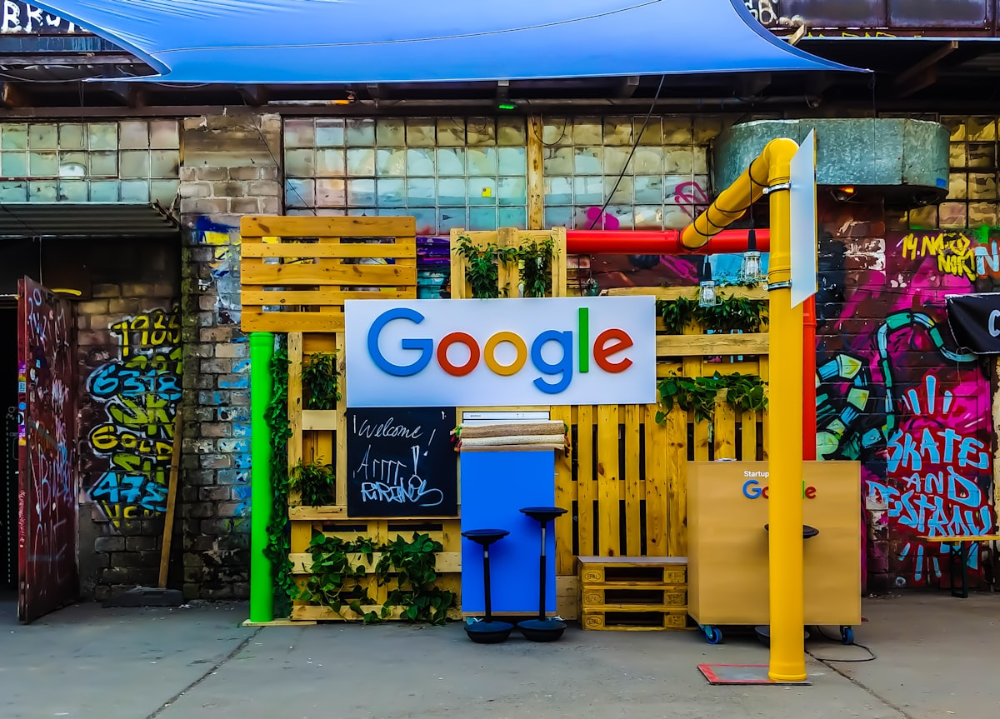

Telecom
Cell-tower and fiber closeout, worksite vision, network OAM ingestion, multilingual carrier support.
“There is always a better way. Find it.” — Thomas Edison
OKO Holding Corporation owns and builds Thunderline, ATLAS, and the operating systems around them. Veteran-led, receipt-grounded, and focused on practical AI for real work.
Identity, receipts, policy gates, event transport, and replay — governed under one runtime, not bolted onto one application.
Triage, summarize, explain, orchestrate. ATLAS works alongside your operators across every workflow it touches. It never holds final authority.
Every state change is sealed with provenance. Every decision is replayable. Every override carries a reason. Audit isn't a feature — it's the spine.
OKO Holding Corporation is the company behind Thunderline, ATLAS, and the related operating brands. The public promise is simple: practical AI systems, governed workflows, human approval, and records that show what happened.
Thunderline is the owned substrate. ATLAS is an operating surface. Other brands and vertical tools sit underneath the OKO umbrella as the company expands. The ownership story is OKO first.
ATLAS is not autonomous decisioning. It produces structured recommendations, evidence-backed explanations, and routed handoffs. The human in the loop is a feature of the system, not a constraint we work around.
We separate doctrine from deployment. Accepted plans live in version-controlled documentation; build authorization is a separate ruling with its own receipt. This discipline carries through every product we ship.
OKO supports several scoped capability lanes. Some are live patterns, some are in active build, and some are concept lanes. We are explicit about which is which.
Thunderline is the governed operating substrate that ATLAS rides on. It is not a model. It is the runtime around models — the layer that decides what an agent is allowed to do, records what it actually did, projects the consequences into a queryable shape, and refuses to execute when the operating envelope is incomplete.
Thunderline runs on the BEAM — the virtual machine Erlang has used in production since 1986, when Ericsson invented it for telecom switches. The same runtime that powers Ericsson's AXD301 telephone exchange, WhatsApp's messaging backbone, the Kazoo Erlang PBX, RabbitMQ, ejabberd, and Riak.
This is a credibility lever, not an availability claim. We tell operators what the runtime is and let them draw their own conclusions about its lineage. Senior telecom and messaging engineers can read our code on day one.
OKO owns the operating family. Thunderline provides the governed substrate. Each lane is scoped separately, tied to human approval, and recorded through receipts.
Workbook, checklist, and photo bundles are organized into a requirement-bound review surface. The system prepares evidence, flags gaps, and records the review trail. The supervisor still decides.
Pilot laneField imagery can be structured into observations, candidate evidence, and change signals. Outputs are evidence for operators, not verdicts from the machine.
Scoped capabilityOKO can scaffold task-specific operating surfaces for teams that need less admin drag and more structured handoff discipline.
Roadmap laneOperational posture is assembled from receipts, findings, exceptions, and human decisions so managers can see what happened and what remains unresolved.
Operator surfaceInbound events, status changes, and customer-facing handoffs can be normalized into durable queues with retry, audit, and human review boundaries.
Production patternMultilingual transcription and intake preparation can support live operators. The system prepares context; the handler does the work.
Scoped laneBeyond the first operating lanes, OKO supports scoped work in territorial AI licensing, tenant-owned deployments, white-label substrate hosting, governance and policy advisory, semantic-kernel research, agent-stack integration consulting, and bespoke vertical solutions on the same substrate. Each is engaged as a separate scope.
Thunderline is vertical-agnostic; OKO adapts it to practical operating lanes. Telecom closeout is the first beachhead. The substrate generalizes from there.

Cell-tower and fiber closeout, worksite vision, network OAM ingestion, multilingual carrier support.

Drone inspection pipelines, asset condition tracking, regulatory dashboards, work-order routing.

Real-time multilingual call intake, structured handoff to dispatchers, audit-trail receipts.

Multilingual triage transcription, structured intake preparation, HIPAA-aware integration patterns.

Front-office workflow agents, compliance audit trails, governed action with capability ceilings.
Crew dispatch in noisy environments, equipment recognition, evidence capture and routing.
Continuous worksite vision, defect detection pipelines, requirement-bound quality review.

Receipt-grounded compliance dashboards, transparency-by-design audit trails, multilingual citizen intake.

First-notice-of-loss intake, claims evidence review, structured documentation alongside live calls.

Site closeout, daily-progress vision capture, RFI tracking, and submittal workflow support.
Yard and depot vision, asset reconciliation, multilingual driver and dispatcher intake.
Sovereign-deployable substrate, on-premise governed agent ops, air-gappable receipt trails.
Thunderline speaks to your existing systems through standard contracts: HMAC-signed webhooks, MCP-shaped tool calls via the Crown relay, Phoenix-grade durable event queues, and OTP-native interop with BEAM systems already in your stack.
Integrations land at varying maturity. Named platforms reflect either shipped connectors, working partnerships, or the documented contract by which Thunderline integrates with that system class. Every active integration is reviewed against PolicyGate before reaching production.
OKO operates across timezones, languages, and regulatory environments. Sovereign-deployable substrate. Multilingual operator surfaces. Receipt trails that travel.
OKO believes the economic upside of AI in a given market should accrue to the operators in that market — not to a distant platform. The Thunderline substrate is licensed territory by territory, so a tenant can actually own the operating layer underneath their AI workloads. Sovereign deployment, governed substrate, locally-owned receipts.
The discipline carries through every brand, every contract, every demo. We hold these without apology.
OKO systems produce structured recommendations with provenance. The human in the loop signs the outcome. We do not sell autonomous decisioning, regulator-approved compliance, or enterprise-ready guarantees we have not built.
Deterministic logic runs before probabilistic logic. A workbook parser, a manifest validator, a requirement extractor — these run as code with explicit branches and explicit failure modes. Models extract evidence; rules decide what counts.
A plan landing in our documentation is not a commit hook firing. Designs are read, debated, and accepted on their own terms; implementation requires a separate, explicit authorization with its own receipt.
Every demo opens with the receipt the system produces if it runs clean, the receipt it produces if it fails, and the boundary between the two. Buyers who have seen too many model demos recognize the difference immediately.
We start with one useful operating lane, explain the substrate, and keep the larger family visible. The first dollar is for one verticalized workflow. The compounding value lands as more lanes join the owned substrate.
OKO Holding Corporation is the parent company. It owns Thunderline, ATLAS, and the related operating brands. The company builds governed AI systems for real operations, with human approval and receipt-backed records.
We activated our internal operations command on February 4, 2026, on dedicated infrastructure. We run as a small, disciplined team with a deliberately fast cadence and a deliberately conservative posture on claims.
Our core thesis is that the unit of durable value in AI is not the model and not the application — it is the governed substrate on which both run. Models will keep changing. Vendors will keep churning. Applications will keep being rebuilt. What persists is the layer that gives every action an identity, a receipt, a policy boundary, and a replayable trail.
That layer is what regulators will eventually demand. It is what enterprises will eventually standardize on. It is what a tenant — a licensee, a territory, an operator — can actually own. OKO builds that layer. We call it Thunderline. We license territory by territory. We build the operating brands that prove it works.
Fifty-plus years across global markets. More than a hundred countries. Originator, in 2017, of the thesis that AI in commerce would not be won by the smartest model — but by the party that owned the substrate underneath the agents.
OKO Holding Corporation is headquartered in West Palm Beach, Florida, with operations distributed across timezones. We are not building around a model thesis. We are building around an operating-substrate thesis with a real first vertical and a disciplined brand family behind it.
For investors: a parent-company and substrate-ownership conversation. For strategic partners: a verticalized workflow conversation matched to your operating reality. For senior recruits: a substrate-engineering conversation — receipts as architecture, BEAM as runtime, plan-vs-implementation discipline as practice.
In every case, the discipline is the same: OKO first, one operating workflow, one substrate story, one clear scope. We do not lead with the runway before we show the plane. The receipts are the artifact.